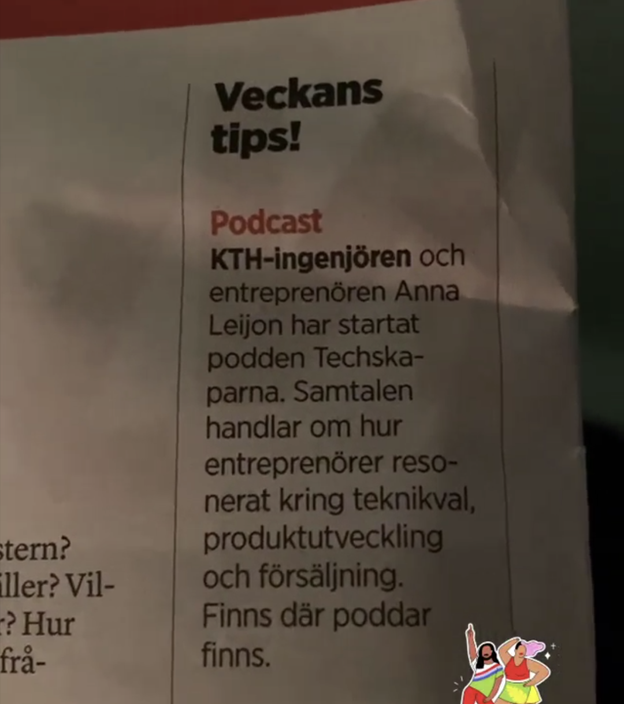
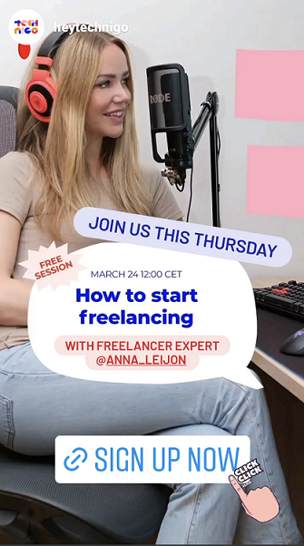
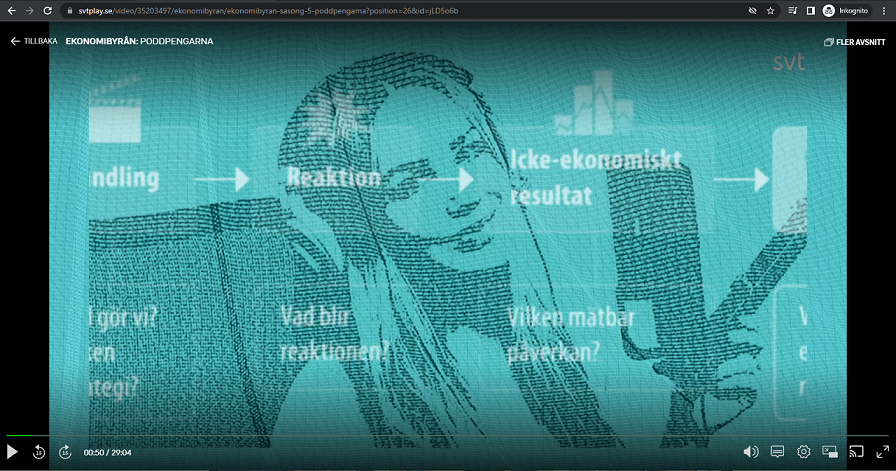
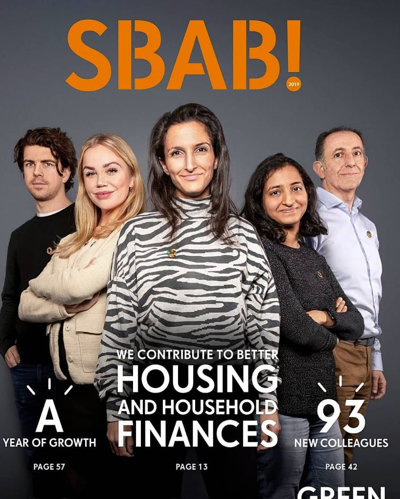

Mentions
Meanwhile the tab called "success stories" covers the feedback that I have received from private individuals, this tab about "mentions" covers mentions by other bloggers, forums, organisations and so forth. I can get mentioned in bypassing, in forums, in nominations, they might dedicate a whole page or an episode or I may have had collaborations with some of them. I am proud to get mentioned, get sponsors and have collaborations. Here are a few of them:
Nominated to Nordic Women in Tech Awards 2022:

Me and my podcast Techskaparna are mentioned in the printed newspaper NyTeknik:

Nominated to the price 50/50 (Jämställdhetspriset - Equality price) by Regent AB:

Collaboration with Technigo and giving a lecture on Freelancing:

Me and my podcast Techskaparna are visible in the intro to Ekonomibyrån in the episode Poddpengarna on the Swedish TV channel SVT1. See more on my Youtube-channel.

I was on the cover of the Swedish bank SBAB's annual report.

I was nominated in Sogeti's #addher Awards 2022 in the category VISIONARY.

And a lot more:
- Appearance in the podcast Kompilator episode 47
- Appearance in the podcast Kodsnack episode 449
- Appearance in the podcast Wetal episode 4
- My article published by IT-Media group
- Appearance in the podcast Kodsnack episode 414
- Appearance in the podcast Konsultpodden episode 18
- Guest blog at Cinode
- Our tea brand Téamo appears at Ehandel.se
- Guest blog at Businesswomen.se
- My article published by KTH Executive School
- My article published by Makeitnew.io
- Appearance at Stinspira
I also think that it is pretty cool that random people mention me and my writings on different forums, such as Flashback and Rika tillsammans. For example in these threads:
- https://www.flashback.org/p76922109
- https://www.flashback.org/t3306068p3
- https://www.flashback.org/p78615864
- https://rikatillsammans.se/forum/t/ga-fran-anstalld-till-egenkonsult-vad-bor-man-tanka-pa/32347/10
- https://rikatillsammans.se/forum/t/ta-steget-och-bli-egenkonsult-it/29395
I am also of course mentioned a lot in my own forum, Frilans & Tech.